4. Beispielanwendung – 02: rdvmedecins-jsf2-spring
Wir werden nun die vorherige Anwendung in eine Spring/Tomcat-Umgebung portieren:
 |
Dies ist tatsächlich eine Portierung. Wir beginnen mit der bisherigen Anwendung und passen sie an die neue Umgebung an. Wir werden nur auf die Änderungen eingehen. Es gibt drei wesentliche Änderungen:
- Der Server ist nicht mehr GlassFish, sondern Tomcat, ein schlanker Server ohne EJB-Container.
- als Ersatz für die EJBs verwenden wir Spring, den Hauptkonkurrenten von EJB [http://www.springsource.com/],
- die verwendete JPA-Implementierung wird Hibernate anstelle von EclipseLink sein.
Da wir viel zwischen dem alten und dem neuen Projekt kopieren und einfügen werden, lassen wir die bisherigen Projekte in NetBeans geöffnet:
 |
Die Verwendung des Spring-Frameworks erfordert bestimmte Kenntnisse, die in [Ref. 7] (siehe Seite 166) zu finden sind.
4.1. Die [DAO]- und [JPA]-Schichten
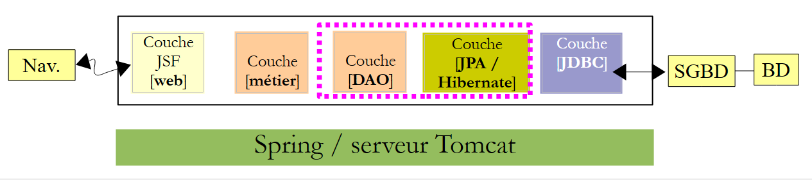 |
4.1.1. Das NetBeans-Projekt
Wir erstellen ein Maven-Projekt vom Typ [Java-Anwendung]:
 |  |  |
 |
- in [1], das erstellte Projekt,
- in [2] dasselbe Projekt, bei dem die [Source Packages] und [Test Packages] sowie die Abhängigkeit [junit-3.8.1] entfernt wurden.
Der schwierigste Teil bei Maven-Projekten ist es, die richtigen Abhängigkeiten zu finden. Für dieses Spring-/JPA-/Hibernate-Projekt lauten diese wie folgt:
<project xmlns="http://maven.apache.org/POM/4.0.0" xmlns:xsi="http://www.w3.org/2001/XMLSchema-instance"
xsi:schemaLocation="http://maven.apache.org/POM/4.0.0 http://maven.apache.org/xsd/maven-4.0.0.xsd">
<modelVersion>4.0.0</modelVersion>
<groupId>istia.st</groupId>
<artifactId>mv-rdvmedecins-spring-dao-jpa</artifactId>
<version>1.0-SNAPSHOT</version>
<packaging>jar</packaging>
<name>mv-rdvmedecins-spring-dao-jpa</name>
<url>http://maven.apache.org</url>
<properties>
<project.build.sourceEncoding>UTF-8</project.build.sourceEncoding>
</properties>
<dependencies>
<dependency>
<groupId>org.hibernate</groupId>
<artifactId>hibernate-entitymanager</artifactId>
<version>4.1.2</version>
<type>jar</type>
</dependency>
<dependency>
<groupId>org.hibernate.java-persistence</groupId>
<artifactId>jpa-api</artifactId>
<version>2.0.Beta-20090815</version>
<type>jar</type>
</dependency>
<dependency>
<groupId>mysql</groupId>
<artifactId>mysql-connector-java</artifactId>
<version>5.1.6</version>
</dependency>
<dependency>
<groupId>junit</groupId>
<artifactId>junit</artifactId>
<version>4.10</version>
<scope>test</scope>
<type>jar</type>
</dependency>
<dependency>
<groupId>commons-dbcp</groupId>
<artifactId>commons-dbcp</artifactId>
<version>1.2.2</version>
</dependency>
<dependency>
<groupId>commons-pool</groupId>
<artifactId>commons-pool</artifactId>
<version>1.6</version>
</dependency>
<dependency>
<groupId>org.springframework</groupId>
<artifactId>spring-tx</artifactId>
<version>3.1.1.RELEASE</version>
<type>jar</type>
</dependency>
<dependency>
<groupId>org.springframework</groupId>
<artifactId>spring-beans</artifactId>
<version>3.1.1.RELEASE</version>
<type>jar</type>
</dependency>
<dependency>
<groupId>org.springframework</groupId>
<artifactId>spring-context</artifactId>
<version>3.1.1.RELEASE</version>
<type>jar</type>
</dependency>
<dependency>
<groupId>org.springframework</groupId>
<artifactId>spring-orm</artifactId>
<version>3.1.1.RELEASE</version>
<type>jar</type>
</dependency>
</dependencies>
</project>
- Zeilen 18–29: für Hibernate,
- Zeilen 30–34: für den MySQL-JDBC-Treiber,
- Zeilen 35–41: für den JUnit-Test,
- Zeilen 42–51: für den Apache Commons DBCP-Verbindungspool. Ein Verbindungspool ist ein Pool offener Verbindungen. Wenn die Anwendung eine Verbindung benötigt, fordert sie eine aus dem Pool an. Wenn sie diese nicht mehr benötigt, gibt sie sie zurück. Verbindungen werden beim Start der Anwendung geöffnet und bleiben für die gesamte Laufzeit der Anwendung offen. Dadurch wird der Aufwand für das wiederholte Öffnen und Schließen von Verbindungen vermieden. Diese Art von Pool gab es bereits in GlassFish, aber seine Nutzung war für uns transparent. Dies wird auch hier der Fall sein, aber wir müssen ihn installieren und konfigurieren,
- Zeilen 52–75: für Spring.
Fügen wir diese Abhängigkeiten hinzu und erstellen wir das Projekt:
 |
- In [1] erstellen wir das Projekt, wodurch Maven gezwungen wird, die Abhängigkeiten herunterzuladen;
- in [2] erscheinen diese dann im Zweig [Dependencies]. Es sind sehr viele, da die Hibernate- und Spring-Frameworks selbst zahlreiche Abhängigkeiten haben. Auch hier müssen wir uns dank Maven keine Gedanken darüber machen. Sie werden automatisch heruntergeladen.
Nachdem wir nun die Abhängigkeiten haben, fügen wir den EJB-Projektcode aus der [dao]-Schicht in das Spring-Projekt in der [dao]-Schicht ein:
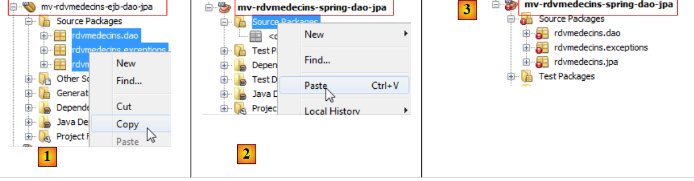 |
- in [1] kopieren wir in das Quellprojekt,
- in [2] fügen wir es in das Zielprojekt ein,
- in [3] das Ergebnis.
Sobald der Kopiervorgang abgeschlossen ist, müssen Sie die Fehler beheben.
4.1.2. Das Paket [exceptions]
 |
Die Klasse [RdvMedecinsExceptions] [1] weist Fehler auf, da das Paket [javax] in Zeile 4 nicht mehr existiert. Es handelt sich hierbei um ein EJB-spezifisches Paket. Der Fehler in Zeile 6 ergibt sich aus dem in Zeile 4. Wir löschen diese beiden Zeilen. Damit sind die Fehler behoben [2].
4.1.3. Das [jpa]-Paket
 |
- In [1] ist die Klasse [Creneau] fehlerhaft, da in Zeile [5] das Validierungspaket fehlt. Wir hätten dieses Paket zu den Projektabhängigkeiten hinzufügen können. Beim Testen löst Hibernate jedoch deswegen eine Ausnahme aus. Da es für unsere Anwendung nicht unbedingt erforderlich ist, haben wir es entfernt. Um die Klasse zu korrigieren, löschen Sie einfach alle fehlerhaften Zeilen [2]. Dies wiederholen wir für alle fehlerhaften Klassen.
4.1.4. Das [dao]-Paket
Wir befinden uns nun an folgendem Punkt:
 |
- in [1], die beiden korrigierten Pakete,
- in [2] das [dao]-Paket. Da es keine EJBs mehr gibt, gelten die Konzepte der EJB-Remote- und -Local-Schnittstellen nicht mehr. Wir entfernen sie [3].
 |
- In [1] haben die Fehler in der Klasse [DaoJpa] zwei Ursachen:
- den Import eines Pakets, das mit EJBs zusammenhängt (Zeilen 6–8);
- die Verwendung der lokalen und Remote-Schnittstellen, die wir gerade entfernt haben.
Wir entfernen die fehlerhaften Zeilen und verwenden die Schnittstelle [IDao] anstelle der lokalen und Remote-Schnittstellen [2].
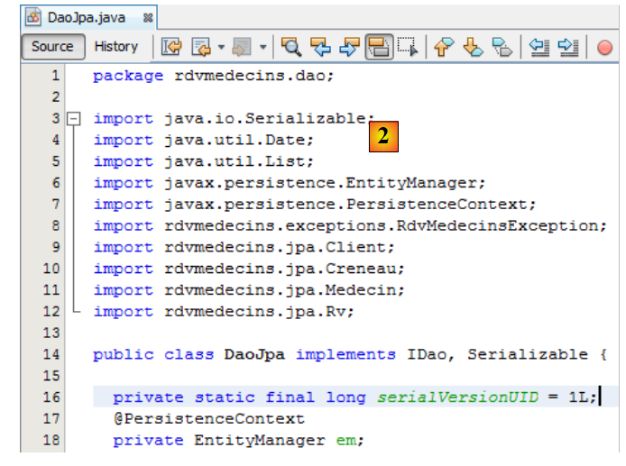 |
Im EJB-Projekt war die Klasse [DaoJpa] ein Singleton, und ihre Methoden liefen innerhalb einer Transaktion. Wir werden sehen, dass die Klasse [DaoJpa] ein von Spring verwaltetes Bean sein wird. Standardmäßig ist jedes Spring-Bean ein Singleton. Damit ist die erste Eigenschaft abgedeckt. Die zweite wird mithilfe der Spring-Annotation @Transactional erreicht [3]:
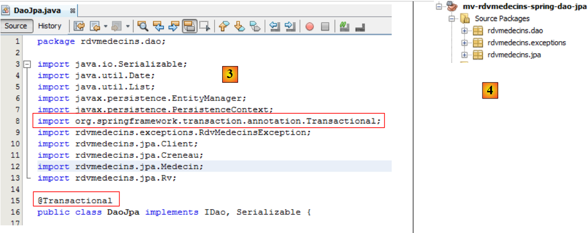 |
Damit weist das Projekt keine Fehler mehr auf [4].
4.1.5. Konfiguration der [JPA]-Schicht
Im EJB-Projekt haben wir die [JPA]-Schicht mithilfe der Datei [persistence.xml] konfiguriert. Da wir hier eine [JPA]-Schicht haben, müssen wir diese Datei erstellen. Im EJB-Projekt haben wir sie mit GlassFish generiert. Hier erstellen wir sie manuell. Der Hauptgrund dafür ist, dass ein Teil der Konfiguration aus der Datei [persistence.xml] in die Spring-Konfigurationsdatei selbst migriert wird.
Wir erstellen die Datei [persistence.xml]:
 |
mit folgendem Inhalt:
<?xml version="1.0" encoding="UTF-8"?>
<persistence version="2.0" xmlns="http://java.sun.com/xml/ns/persistence" xmlns:xsi="http://www.w3.org/2001/XMLSchema-instance" xsi:schemaLocation="http://java.sun.com/xml/ns/persistence http://java.sun.com/xml/ns/persistence/persistence_2_0.xsd">
<persistence-unit name="spring-dao-jpa-hibernate-mysqlPU" transaction-type="RESOURCE_LOCAL">
<class>rdvmedecins.jpa.Client</class>
<class>rdvmedecins.jpa.Creneau</class>
<class>rdvmedecins.jpa.Medecin</class>
<class>rdvmedecins.jpa.Rv</class>
</persistence-unit>
</persistence>
- Zeile 3: Wir geben der Persistence-Unit einen Namen,
- Zeile 3: Der Transaktionstyp ist RESOURCE_LOCAL. Im EJB-Projekt war es JTA, um anzugeben, dass Transaktionen vom EJB-Container verwaltet wurden. Der Wert RESOURCE_LOCAL gibt an, dass die Anwendung ihre eigenen Transaktionen verwaltet. Dies wird hier über Spring geschehen,
- Zeilen 4–7: die vollständigen Namen der vier JPA-Entitäten. Dies ist optional, da Hibernate automatisch im ClassPath des Projekts danach sucht.
Das war’s. Der Name des JPA-Anbieters, seine Eigenschaften und die JDBC-Merkmale der Datenquelle befinden sich nun in der Spring-Konfigurationsdatei.
4.1.6. Die Spring-Konfigurationsdatei
Wir haben erwähnt, dass die Klasse [DaoJpa] ein von Spring verwalteter Bean ist. Dies geschieht über eine Konfigurationsdatei. Diese Datei enthält auch die Konfiguration für den Datenbankzugriff sowie die Transaktionsverwaltung. Sie muss sich im ClassPath des Projekts befinden. Wir legen sie im Ordner [Other sources] ab:
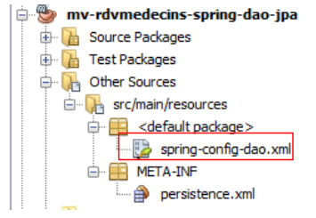 |
Die Datei [spring-config-dao.xml] sieht wie folgt aus:
<?xml version="1.0" encoding="UTF-8"?>
<beans xmlns="http://www.springframework.org/schema/beans" xmlns:xsi="http://www.w3.org/2001/XMLSchema-instance"
xmlns:tx="http://www.springframework.org/schema/tx"
xsi:schemaLocation="http://www.springframework.org/schema/beans http://www.springframework.org/schema/beans/spring-beans-2.0.xsd http://www.springframework.org/schema/tx http://www.springframework.org/schema/tx/spring-tx-2.0.xsd">
<!-- application layers -->
<bean id="dao" class=" " />
<!-- EntityManagerFactory -->
<bean id="entityManagerFactory" class="org.springframework.orm.jpa.LocalContainerEntityManagerFactoryBean">
<property name="dataSource" ref="dataSource" />
<property name="jpaVendorAdapter">
<bean class="org.springframework.orm.jpa.vendor.HibernateJpaVendorAdapter">
<property name="databasePlatform" value="org.hibernate.dialect.MySQL5InnoDBDialect" />
<!--
<property name="showSql" value="true" />
<property name="generateDdl" value="true" />
-->
</bean>
</property>
</bean>
<!-- data source DBCP -->
<bean id="dataSource" class="org.apache.commons.dbcp.BasicDataSource" destroy-method="close">
<property name="driverClassName" value="com.mysql.jdbc.Driver" />
<property name="url" value="jdbc:mysql://localhost:3306/dbrdvmedecins2" />
<property name="username" value="root" />
<property name="password" value="" />
</bean>
<!-- transaction manager -->
<tx:annotation-driven transaction-manager="txManager" />
<bean id="txManager" class="org.springframework.orm.jpa.JpaTransactionManager">
<property name="entityManagerFactory" ref="entityManagerFactory" />
</bean>
<!-- translation of exceptions -->
<bean class="org.springframework.dao.annotation.PersistenceExceptionTranslationPostProcessor" />
<!-- persistence -->
<bean class="org.springframework.orm.jpa.support.PersistenceAnnotationBeanPostProcessor" />
</beans>
Dies ist eine Spring 2.x-kompatible Datei. Wir haben nicht versucht, die neuen Funktionen der 3.x-Versionen zu nutzen.
- Zeilen 2–4: das Stamm-Tag <beans> der Konfigurationsdatei. Wir werden nicht auf die verschiedenen Attribute dieses Tags eingehen. Achten Sie darauf, den Text sorgfältig zu kopieren und einzufügen, da ein Fehler in einem dieser Attribute zu Fehlern führen kann, die manchmal schwer zu verstehen sind.
- Zeile 7: Die „dao“-Bean ist eine Referenz auf eine Instanz der Klasse [rdvmedecins.dao.DaoJpa]. Es wird eine einzige Instanz erstellt (Singleton), die die [dao]-Schicht der Anwendung implementiert.
- Zeilen 24–29: Es wird eine Datenquelle definiert. Sie stellt den zuvor erwähnten „Connection Pool“-Dienst bereit. Hier wird das [DBCP] aus dem Apache Commons DBCP-Projekt [http://jakarta.apache.org/commons/dbcp/] verwendet.
- Zeilen 25–28: Um Verbindungen zur Zieldatenbank herzustellen, muss die Datenquelle den verwendeten JDBC-Treiber (Zeile 25), die Datenbank-URL (Zeile 26) sowie den Benutzernamen und das Passwort für die Verbindung (Zeilen 27–28) kennen,
- Zeilen 10–21: Konfiguration der JPA-Schicht,
- Zeile 10: Definiert eine [EntityManagerFactory]-Bean, die [EntityManager]-Objekte erstellen kann, um Persistenzkontexte zu verwalten. Die instanziierte Klasse [LocalContainerEntityManagerFactoryBean] wird von Spring bereitgestellt. Sie benötigt zur Instanziierung eine Reihe von Parametern, die in den Zeilen 11–20 definiert sind,
- Zeile 11: die Datenquelle, die zum Herstellen von Verbindungen zum DBMS verwendet werden soll. Dies ist die in den Zeilen 24–29 definierte [DBCP]-Quelle,
- Zeilen 12–20: die zu verwendende JPA-Implementierung,
- Zeile 13: definiert Hibernate als die zu verwendende JPA-Implementierung,
- Zeile 14: der SQL-Dialekt, den Hibernate mit dem Ziel-DBMS verwenden muss, hier MySQL5,
- Zeile 16 (auskommentiert): fordert an, dass von Hibernate ausgeführte SQL-Anweisungen in der Konsole protokolliert werden,
- Zeile 17 (auskommentiert): fordert an, dass die Datenbank beim Start der Anwendung generiert wird (löschen und erstellen),
- Zeile 32: legt fest, dass Transaktionen mithilfe von Java-Annotationen verwaltet werden (sie hätten auch in spring-config.xml deklariert werden können). Konkret handelt es sich um die Annotation @Transactional in der Klasse [DaoJpa],
- Zeilen 33–35: definieren den zu verwendenden Transaktionsmanager,
- Zeile 33: Der Transaktionsmanager ist eine von Spring bereitgestellte Klasse,
- Zeile 34: Der Transaktionsmanager von Spring muss die EntityManagerFactory kennen, die die JPA-Schicht verwaltet. Dies ist die in den Zeilen 10–21 definierte,
- Zeile 41: definiert die Klasse, die die Spring-Persistenz-Annotationen verwaltet,
- Zeile 38: definiert die Spring-Klasse, die unter anderem die Annotation @Repository verarbeitet, wodurch eine auf diese Weise annotierte Klasse für die Übersetzung nativer JDBC-Treiberausnahmen aus dem DBMS in generische Spring-Ausnahmen vom Typ [DataAccessException] in Frage kommt. Diese Übersetzung kapseln die native JDBC-Ausnahme in einen Typ [DataAccessException], der verschiedene Unterklassen aufweist:

Diese Übersetzung ermöglicht es dem Client-Programm, Ausnahmen unabhängig vom Ziel-DBMS generisch zu behandeln. Wir haben die Annotation @Repository in unserem Java-Code nicht verwendet. Daher ist Zeile 38 überflüssig. Wir haben sie nur zu Informationszwecken stehen lassen.
Wir sind mit der Spring-Konfigurationsdatei fertig. Sie stammt aus der Spring-Dokumentation. Die Anpassung an verschiedene Situationen läuft oft auf zwei Änderungen hinaus:
- die Zieldatenbank: Zeilen 24–29,
- die JPA-Implementierung: Zeilen 12–20.
Wenn der Code ausgeführt wird, werden alle Beans in der Konfigurationsdatei instanziiert. Wir werden sehen, wie das funktioniert.
4.1.7. Die JUnit-Testklasse
 |
Wir haben die [DAO]-Schicht des EJB-Projekts mit einem JUnit-Test getestet. Das Gleiche werden wir für die [DAO]-Schicht des Spring-Projekts tun:
- in [1] und [2], wobei der JUnit-Test zwischen den beiden Projekten kopiert und eingefügt wird,
- in [3] zeigt der importierte Test in seiner neuen Umgebung Fehler an.
 |
Der in [1] gemeldete Fehler besagt, dass die Remote-Schnittstelle des EJB nicht mehr existiert. Außerdem war der Initialisierungscode für das Feld [dao] in Zeile 19 ein EJB-spezifischer JNDI-Aufruf (Zeilen 25–28). Um das Feld [dao] in Zeile 19 zu instanziieren, müssen wir die Spring-Konfigurationsdatei verwenden. Dies geschieht wie folgt:
 |
- Zeile 21: Der Schnittstellentyp lautet nun [IDao],
- Zeile 28: instanziiert alle in der Datei [spring-config-dao.xml] deklarierten Beans, insbesondere diese:
<bean id="dao" class="rdvmedecins.dao.DaoJpa" />
- Zeile 29 fordert eine Referenz auf die Bean mit der ID „dao“ aus dem Spring-Kontext in Zeile 28 an. Wir erhalten dann eine Referenz auf das [DaoJpa]-Singleton (siehe obige Klasse), das Spring instanziiert hat.
Die Zeilen 28–29 bilden die folgenden Blöcke (rosa gepunktete Linien):
 |
Wenn die JUnit-Client-Tests ausgeführt werden, ist die [DAO]-Schicht instanziiert. Wir können daher ihre Methoden testen. Beachten Sie, dass für die Ausführung dieses Tests kein Server erforderlich ist, im Gegensatz zum EJB-[DAO]-Test, für den der Glassfish-Server benötigt wurde. Hier läuft alles innerhalb derselben JVM.
Wir können nun den JUnit-Test ausführen. Der MySQL-Server muss dabei laufen. Die Ergebnisse lauten wie folgt:
 |
Der JUnit-Test wurde bestanden. Sehen wir uns die Testprotokolle an, wie wir es bereits beim EJB-Test getan haben:
- Zeilen 1–4: Spring-Protokolle,
- Zeilen 5–10: Hibernate-Protokolle,
- Zeile 11: Spring meldet alle Beans, die es instanziiert hat. Zunächst sehen wir die [dao]-Bean,
- Zeilen 12 ff.: JUnit-Testprotokolle,
- Zeilen 60–65: Wir sehen deutlich die Ausnahme, die durch das Hinzufügen eines Termins verursacht wurde, der bereits in der Datenbank vorhanden ist. Erinnern Sie sich daran, dass wir bei EJB diese Ausnahme aufgrund eines Serialisierungsproblems nicht erhalten haben.
Die [dao]-Schicht ist betriebsbereit. Wir werden nun die [business]-Schicht erstellen.
4.2. Die [Business]-Schicht
 |
Wir gehen genauso vor wie bei der [DAO]-Schicht, indem wir Inhalte aus dem EJB-Projekt kopieren und in das Spring-Projekt einfügen.
4.2.1. Das NetBeans-Projekt
Wir erstellen ein neues Maven-Projekt vom Typ [Java-Anwendung], wobei wir alles entfernen, was wir nicht behalten möchten [1]:
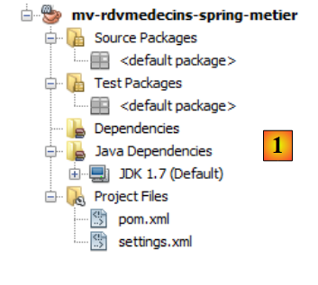 |
4.2.2. Projektabhängigkeiten
In der Architektur:
 |
Die [Business]-Schicht stützt sich auf die [DAO]-Schicht. Wir fügen daher eine Abhängigkeit zum vorherigen Projekt hinzu:
 |
- In [1] und [2] fügen wir eine Abhängigkeit zum Projekt der [DAO]-Schicht hinzu;
- in [3] hat diese Abhängigkeit weitere Abhängigkeiten mit sich gebracht, nämlich die des [DAO]-Layer-Projekts.
 |
- In [1] und [2] kopieren wir die Java-Quelldateien aus dem EJB-Projekt in das Spring-Projekt,
- in [3] enthalten die importierten Quellen in ihrer neuen Umgebung Fehler.
Zunächst entfernen wir die Remote- und Local-Schnittstellen aus der [Business]-Schicht, die nicht mehr existieren [4]:
 |
- In [5] haben die Fehler in der [Business]-Klasse mehrere Ursachen:
- die Verwendung des Pakets [javax.ejb], das nicht mehr existiert;
- die Verwendung der Schnittstelle [IDaoLocal], die nicht mehr existiert;
- die Verwendung der Schnittstellen [IMetierRemote] und [IMetierLocal], die nicht mehr existieren.
Wir
- löschen alle fehlerhaften Zeilen, die sich auf das Paket [javax.ejb] beziehen,
- ersetzen die Schnittstelle [IDaoLocal] durch die Schnittstelle [IDao]
- ersetzen die Schnittstellen [IMetierRemote] und [IMetierLocal] durch die Schnittstelle [IMetier].
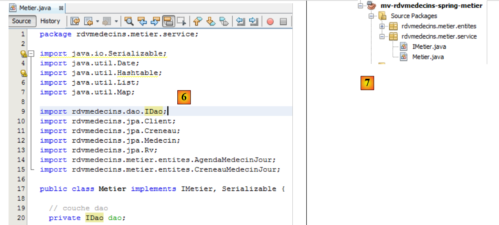 |
- In [6] treten nach der beschriebenen Korrektur der Klasse
- in [7] treten keine Fehler mehr auf.
Wir haben die Verweise auf die EJBs entfernt, müssen nun aber deren Eigenschaften abrufen:
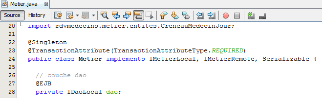 |
- Zeile 22: Wir hatten ein Singleton. Dieses Verhalten wird erreicht, indem die Klasse zu einem von Spring verwalteten Bean gemacht wird,
- Zeile 23: Jede Methode lief innerhalb einer Transaktion. Dies wird mithilfe der Spring-Annotation @Transactional erreicht,
- Zeilen 27–28: Die Referenz auf die [DAO]-Schicht wurde über die EJB-Container-Injektion bezogen. Wir werden die Spring-Injektion verwenden.
Der Code für die [Metier]-Klasse im Spring-Projekt entwickelt sich daher wie folgt:
 |
Das war's schon mit dem Java-Code. Der Rest findet in der Spring-Konfigurationsdatei statt.
4.2.3. Die Spring-Konfigurationsdatei
Wir kopieren die Spring-Konfigurationsdatei aus dem Projekt der [DAO]-Schicht in das Projekt der [Business]-Schicht. Zunächst erstellen wir den Zweig [Other Resources] im Projekt der [Business]-Schicht, falls dieser noch nicht existiert:
 |
- Erstellen Sie in [1] auf der Registerkarte [Files] einen Unterordner unter dem Ordner [main],
- in [2] sollte er den Namen [resources] tragen,
- in [3] wurde auf der Registerkarte [Projekte] der Zweig [Andere Quellen] erstellt.
Wir können nun die Spring-Konfigurationsdatei kopieren und einfügen:
 |
- in [1] die Datei aus dem [DAO]-Projekt in das [business]-Projekt [2] kopieren,
- in [3] die kopierte Datei.
Die kopierte Konfigurationsdatei konfiguriert die [DAO]-Schicht. Wir fügen ihr eine Bean hinzu, um die [business]-Schicht zu konfigurieren:
- Zeile 2: die Bean der [DAO]-Schicht,
- Zeilen 3–5: die Bean der [Business]-Schicht,
- Zeile 3: Die Bean heißt „métier“ (Attribut „id“) und ist eine Instanz der Klasse [rdvmedecins.metier.service.Metier] (Attribut „class“). Diese Bean wird wie die anderen beim Start der Anwendung instanziiert.
Sehen wir uns den Code für die [rdvmedecins.metier.service.Metier]-Bean an:
package rdvmedecins.metier.service;
...
public class Metier implements IMetier, Serializable {
// dao layer
private IDao dao;
public Metier() {
}
- Zeile 8: Das Feld [dao] wird von Spring gleichzeitig mit dem Business-Bean instanziiert. Kehren wir zur Definition dieses Beans in der Spring-Konfigurationsdatei zurück:
- Zeile 4: Das <property>-Tag wird verwendet, um Felder des instanziierten Beans zu initialisieren. Der Feldname wird durch das name-Attribut angegeben. Daher wird das Feld „dao“ der Klasse [rdvmedecins.metier.service.Metier] instanziiert. Dies geschieht über eine Methode „setDao“, die vorhanden sein muss. Der ihr zugewiesene Wert ist der des Attributs „ref“. In diesem Fall ist dieser Wert die Referenz auf die Dao-Bean aus Zeile 2.
Einfacher ausgedrückt, im Code:
package rdvmedecins.metier.service;
...
public class Metier implements IMetier, Serializable {
// dao layer
private IDao dao;
public Metier() {
}
Das Feld „dao“ in Zeile 19 wird von Spring mit einem Verweis auf die [dao]-Schicht initialisiert. Genau das wollten wir erreichen. Das Feld „dao“ wird von Spring über einen Setter initialisiert, den wir hinzufügen müssen:
// setter
public void setDao(IDao dao) {
this.dao = dao;
}
Wir benennen die Spring-Konfigurationsdatei um, um die Änderungen widerzuspiegeln:
 |
Wir sind nun bereit, einen Test durchzuführen. Wir verwenden den Konsolentest, der zum Testen des [Business]-EJBs verwendet wurde.
4.2.4. Testen der [Business]-Schicht
Der Test wird mit der folgenden Architektur ausgeführt:
 |
Wir kopieren den Konsolentest aus dem EJB-Projekt in das Spring-Projekt:
 |
- In [1] und [2] kopieren Sie den Code zwischen den beiden Projekten;
- in [3] enthält der importierte Code Fehler.
 |
Der importierte Code enthält zwei Arten von Fehlern:
- Zeile 13: Die Schnittstelle [IMetierRemote] wurde durch die Schnittstelle [IMetier] ersetzt,
- Zeilen 24–27: Die [business]-Schicht wird nicht mehr über einen JNDI-Aufruf instanziiert, sondern durch Instanziierung der Beans aus der Spring-Konfigurationsdatei.
Wir beheben diese beiden Probleme:
 |
- Zeile 22: Die Datei [spring-config-metier-dao.xml] wird verwendet. Alle Beans in dieser Datei werden dann instanziiert. Darunter befinden sich die folgenden:
<!-- application layers -->
<bean id="dao" class="rdvmedecins.dao.DaoJpa" />
<bean id="metier" class="rdvmedecins.metier.service.Metier">
<property name="dao" ref="dao"/>
</bean>
Diese beiden Beans repräsentieren die [DAO]- und [Business]-Schichten der Testarchitektur:
 |
Sobald dies erledigt ist, kann der Test ausgeführt werden:
 |
Die Testprotokolle lauten wie folgt:
- Zeilen 1–4: Spring- und Hibernate-Protokolle,
- Zeile 5: von Spring instanziierte Beans. Beachten Sie die DAO- und Business-Beans,
- Zeilen 6–53: die Testprotokolle. Sie stimmen mit den Ergebnissen des EJB-Projekttests überein. Wir verweisen den Leser auf die Kommentare zu diesem Test (Abschnitt 3.5.3).
Wir haben die [Business]-Schicht erstellt. Nun gehen wir zur letzten Schicht über, der [Web]-Schicht.
4.3. Die [Web-]Ebene
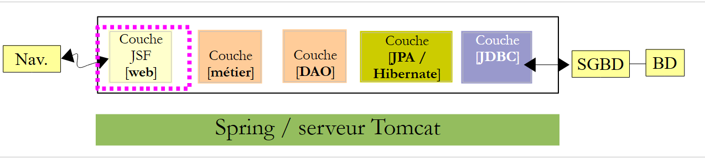 |
Um die [Web]-Schicht zu erstellen, gehen wir genauso vor wie bei den anderen beiden Schichten, indem wir Inhalte aus der [Web]-Schicht des EJB-Projekts kopieren und einfügen.
4.3.1. Das NetBeans-Projekt
Zunächst erstellen wir ein Web-Projekt:
 |
- Erstellen Sie in [1] ein neues Projekt,
- in [2] ein Maven-Projekt vom Typ [Webanwendung],
- in [3] geben wir ihm einen Namen,
 |
- in [4] wählen wir diesmal den Tomcat-Server anstelle von GlassFish, der für das EJB-Projekt verwendet wurde,
- in [5] das resultierende Projekt,
- in [6], das Projekt nach dem Entfernen von [index.jsp] und dem Paket [Source Packages].
4.3.2. Projektabhängigkeiten
Sehen wir uns die Projektarchitektur an:
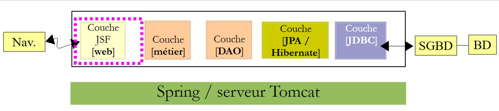 |
Die [Web]-Schicht hängt von den [Business]-, [DAO]- und [JPA]-Schichten ab. Diese sind Teil der beiden Projekte, die wir gerade erstellt haben. Daher besteht eine Abhängigkeit von jedem dieser Projekte:
 |
- In [1] fügen wir die Abhängigkeit vom Spring-/Business-Projekt hinzu,
- in [2] wurde das Spring-/Business-Projekt hinzugefügt. Da dieses selbst eine Abhängigkeit vom Spring-/DAO-/JPA-Projekt hatte, wurde dieses automatisch zu den Abhängigkeiten hinzugefügt [3].
Kehren wir zur Struktur unserer Anwendung zurück:
 |
Die Webschicht ist eine JSF-Schicht. Wir benötigen daher die Java Server Faces-Bibliotheken. Der Tomcat-Server verfügt nicht über diese. Die Abhängigkeit hat daher nicht wie beim Glassfish-Server den Geltungsbereich [provided], sondern den Geltungsbereich [compile], der der Standardgeltungsbereich ist, wenn kein Geltungsbereich angegeben wird.
Wir fügen diese Abhängigkeiten direkt in die [pom.xml]-Datei ein:
<dependencies>
<dependency>
<groupId>${project.groupId}</groupId>
<artifactId>mv-rdvmedecins-spring-metier</artifactId>
<version>${project.version}</version>
</dependency>
<dependency>
<groupId>com.sun.faces</groupId>
<artifactId>jsf-api</artifactId>
<version>2.1.7</version>
</dependency>
<dependency>
<groupId>com.sun.faces</groupId>
<artifactId>jsf-impl</artifactId>
<version>2.1.7</version>
</dependency>
<dependency>
<groupId>javax</groupId>
<artifactId>javaee-web-api</artifactId>
<version>6.0</version>
<scope>provided</scope>
</dependency>
</dependencies>
- Die Zeilen 7–16 wurden der Datei [pom.xml] hinzugefügt. Dies sind die Abhängigkeiten für JSF. Es handelt sich um diejenigen, die im EJB/GlassFish-Projekt verwendet werden. Beachten Sie, dass sie kein <scope>-Tag haben. Daher haben sie standardmäßig den [compile]-Gültigkeitsbereich. Die JSF-Bibliothek wird somit in das [war]-Archiv des Webprojekts eingebettet.
Nachdem wir diese Abhängigkeiten zur Datei [pom.xml] hinzugefügt haben, kompilieren wir das Projekt, damit sie heruntergeladen werden.
4.3.3. Portierung des JSF/GlassFish-Projekts auf das JSF/Tomcat-Projekt
Wir kopieren den gesamten Code aus dem JSF/Glassfish-Projekt in das JSF/Tomcat-Projekt:
 |
- [1, 2, 3]: Kopieren Sie die Webseiten aus dem alten Projekt in das neue,
 |
- [1, 2, 3]: Kopiere den Java-Code aus dem alten Projekt in das neue. Es gibt Fehler. Das ist normal. Wir werden sie beheben,
 |
- Erstellen Sie in [1] auf der Registerkarte [Dateien] von NetBeans einen Unterordner [resources] innerhalb des Ordners [main],
- dadurch wird der Zweig [Other Sources] auf der Registerkarte [Projects] [3] erstellt,
 |
- [1, 2, 3]: Kopieren Sie die Meldungsdateien aus dem alten Projekt in das neue Projekt.
4.3.4. Änderungen am importierten Projekt
Wir haben festgestellt, dass der importierte Java-Code Fehler enthielt. Sehen wir uns diese einmal an:
 |
- In [1] ist nur die [Application]-Bean fehlerhaft;
- in [2] ist der Fehler ausschließlich auf die Schnittstelle [IMetierLocal] zurückzuführen, die nicht mehr existiert. Hier mag es überraschen, dass Zeile 20 nicht als Fehler markiert wird. Die Annotation @EJB bezieht sich explizit auf EJBs und wird hier erkannt. Dies ist auf das Vorhandensein der Abhängigkeit [javaee-web-api-6.0] zurückzuführen [3]. Java EE 6 führte eine Architektur ein, die es ermöglicht, eine auf EJBs basierende Webanwendung ohne Remote-Schnittstelle auf Servern bereitzustellen, die keinen EJB-Container besitzen. Der Server muss lediglich die Abhängigkeit [javaee-web-api-6.0] bereitstellen. Wir sehen, dass diese Abhängigkeit den Geltungsbereich [provided] hat [3].
Hier werden wir die Abhängigkeit [javaee-web-api-6.0] nicht verwenden. Wir entfernen sie [1]:
 |
 |
Dies führt zu neuen Fehlern [2]. Beginnen wir mit denen in der [Form]-Bean:
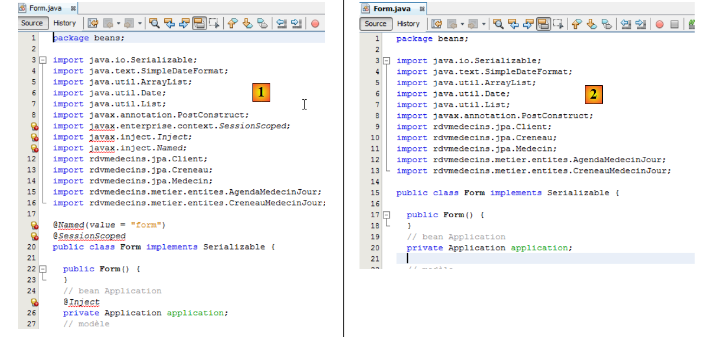 |
- In [1] hängen die fehlerhaften Zeilen mit dem Fehlen des [javax]-Pakets zusammen. Wir entfernen sie alle [2]. Die fehlerhaften Zeilen machten die [Form]-Klasse zu einer Bean im Session-Bereich (Zeilen 18–20 von [1]). Zusätzlich wurde die [Application]-Bean in Zeile 25 injiziert. Diese Informationen werden in die JSF-Konfigurationsdatei [faces-config.xml] verschoben.
Kommen wir nun zur [Application]-Bean:
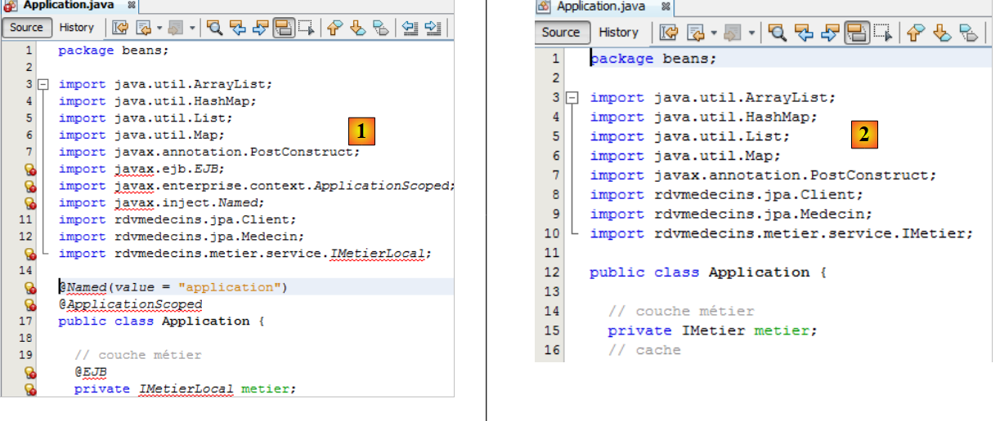 |
Wir entfernen alle fehlerhaften Zeilen aus [1] und ändern die Schnittstelle [IMetierLocal] in den Zeilen 13 und 21 in [IMetier]. In [2] gibt es keine Fehler mehr. In [1] haben wir die Zeilen 15–16 entfernt, die die Klasse [Application] zu einer Bean im Anwendungsbereich machten. Diese Informationen werden in die JSF-Konfigurationsdatei [faces-config.xml] verschoben. Wir haben außerdem Zeile 20 entfernt, die eine Referenz aus der [business]-Schicht in die Bean injiziert hat. Nun wird diese von Spring initialisiert. Wir haben bereits die erforderliche Konfigurationsdatei; es ist die aus dem Spring / Business-Projekt. Wir kopieren sie:
 |
- in [1, 2] kopieren wir die Spring-Konfigurationsdatei aus dem Projekt „Spring / Business“ in das Projekt „Spring / JSF“,
 |
In [3] das Ergebnis.
Im [Application]-Bean müssen wir diese Konfigurationsdatei verwenden, um eine Referenz auf die [business]-Schicht zu erhalten. Dies geschieht in dessen [init]-Methode:
package beans;
...
import org.springframework.context.ApplicationContext;
import org.springframework.context.support.ClassPathXmlApplicationContext;
public class Application {
// business layer
private IMetier metier;
...
public Application() {
}
@PostConstruct
public void init() {
try {
// instantiation layer [business]
ApplicationContext ctx = new ClassPathXmlApplicationContext("spring-config-metier-dao.xml");
metier = (IMetier) ctx.getBean("metier");
// caching doctors and customers
...
} catch (Throwable th) {
...
}
...
}
- Zeile 20: Die Beans aus der Spring-Konfigurationsdatei werden instanziiert,
- Zeile 21: Es wird eine Referenz für die Business-Bean angefordert, d. h. in der [business]-Schicht.
Generell sollten Spring-Beans in der init-Methode der Bean mit Anwendungsbereich instanziiert werden. Es gibt eine weitere Methode, bei der Beans von einem Spring-Servlet instanziiert werden. Dazu muss die Datei [web.xml] geändert und eine Abhängigkeit zum Artefakt [spring-web] hinzugefügt werden. Wir haben dies hier nicht getan, um die Konsistenz mit dem im vorherigen Code verwendeten Ansatz zu wahren.
Wir haben die Annotationen in den Klassen [Application] und [Form] entfernt, die sie zu JSF-Beans machten. Diese Klassen müssen JSF-Beans bleiben. Anstelle von Annotationen verwenden wir nun die JSF-Konfigurationsdatei [WEB-INF/faces.config.xml], um die Beans zu deklarieren.
 |
Diese Datei sieht nun wie folgt aus:
<?xml version='1.0' encoding='UTF-8'?>
<!-- =========== FULL CONFIGURATION FILE ================================== -->
<faces-config version="2.0"
xmlns="http://java.sun.com/xml/ns/javaee"
xmlns:xsi="http://www.w3.org/2001/XMLSchema-instance"
xsi:schemaLocation="http://java.sun.com/xml/ns/javaee http://java.sun.com/xml/ns/javaee/web-facesconfig_2_0.xsd">
<application>
<!-- message file -->
<resource-bundle>
<base-name>
messages
</base-name>
<var>msg</var>
</resource-bundle>
<message-bundle>messages</message-bundle>
</application>
<!-- the applicationBean bean -->
<managed-bean>
<managed-bean-name>applicationBean</managed-bean-name>
<managed-bean-class>beans.Application</managed-bean-class>
<managed-bean-scope>application</managed-bean-scope>
</managed-bean>
<!-- the bean form -->
<managed-bean>
<managed-bean-name>form</managed-bean-name>
<managed-bean-class>beans.Form</managed-bean-class>
<managed-bean-scope>session</managed-bean-scope>
<managed-property>
<property-name>application</property-name>
<value>#{applicationBean}</value>
</managed-property>
</managed-bean>
</faces-config>
- Die Zeilen 10–19 konfigurieren die Nachrichtendatei. Dies war die einzige Konfiguration, die wir im JSF/EJB-Projekt hatten,
- In den Zeilen 21–35 werden die JSF-Anwendungs-Beans deklariert. Dies war der Standardansatz bei JSF 1.x. Mit JSF 2 wurden Annotationen eingeführt, doch die Methode aus JSF 1.x wird weiterhin unterstützt,
- Zeilen 21–25: Deklarieren Sie die applicationBean,
- Zeile 22: den Namen des Beans. Man könnte versucht sein, den Namen „application“ zu verwenden. Vermeiden Sie dies, da es sich um den Namen eines vordefinierten JSF-Beans handelt,
- Zeile 23: der vollständige Name der Klasse des Beans,
- Zeile 24: sein Geltungsbereich,
- Zeilen 27–35: Definieren Sie die Formular-Bean,
- Zeile 28: der Name des Beans,
- Zeile 29: Der vollständige Name der Bean-Klasse,
- Zeile 30: ihr Geltungsbereich,
- Zeilen 31–34: Definieren einer Eigenschaft der Klasse [beans.Form],
- Zeile 32: Name der Eigenschaft. Die Klasse [beans.Form] muss ein Feld mit diesem Namen und den entsprechenden Setter haben,
- Zeile 33: der Wert des Feldes. Hier ist es die Referenz auf die in Zeile 21 definierte applicationBean. Wir injizieren also die Bean mit Anwendungs-Scope in die Bean mit Session-Scope, damit letztere Zugriff auf Daten mit Anwendungs-Scope hat.
Wir haben bereits erwähnt, dass das Feld [application] der Bean [beans.Form] über einen Setter initialisiert wird. Wir müssen es daher zur Klasse [beans.Form] hinzufügen, falls es noch nicht vorhanden ist:
public void setApplication(Application application) {
this.application = application;
}
4.3.5. Testen der Anwendung
Unsere Anwendung ist nun fehlerfrei und bereit zum Testen:
 |
- in [1] das korrigierte Projekt,
- in [2] erstellen wir es,
- in [3] führen wir es aus. Das MySQL-DBMS muss laufen. Der Tomcat-Server wird dann [4] gestartet, falls er noch nicht lief, und die Startseite der Anwendung wird angezeigt [5]:
 |
Von dort aus sehen wir die Anwendung, die wir untersucht haben. Wir überlassen es dem Leser, zu überprüfen, ob sie funktioniert. Nun stoppen wir die Anwendung:
 |
- In [1] laden wir die Anwendung entladen,
- in [2] ist sie nicht mehr vorhanden.
Sehen wir uns nun die „ “-Protokolle von Tomcat an:
Die Zeilen 2 und 4 weisen auf eine Fehlfunktion beim Herunterfahren der Anwendung hin. Zeile 4 weist auf ein mögliches Risiko eines Speicherlecks hin. Tatsächlich tritt dieses auf, und nach einer Weile wird NetBeans unbrauchbar. Dieses Problem ist besonders frustrierend, da NetBeans bei jeder Ausführung des Projekts neu gestartet werden muss. Dieses Problem wurde bereits im Dokument „Introduction to Struts 2 by Example“ [http://tahe.developpez.com/java/struts2] beschrieben.
Zu diesem Fehler sind online zahlreiche Informationen verfügbar. Er tritt auf, wenn eine Anwendung wiederholt von Tomcat geladen und entladen wird. Nach einer Weile erscheint der Fehler java.lang.OutOfMemoryError: PermGen space. Es scheint keine Lösung zu geben, um diesen Fehler zu verhindern, wenn er, wie in diesem Fall, von Bibliotheken (JARs) von Drittanbietern verursacht wird. Sie müssen dann Tomcat neu starten, um das Problem zu beheben.
Sie können das Auftreten dieses Fehlers jedoch verzögern. Erhöhen Sie zunächst den Speicherplatz, der übergelaufen ist.
 |
- Gehen Sie in [1] zu den Tomcat-Servereigenschaften,
- in [2] auf der Registerkarte [Platform] den Wert für den Speicherüberlauf fest. Hier haben wir ihn auf 1 GB gesetzt, da wir insgesamt 8 GB Arbeitsspeicher hatten. Bei einer geringeren Speicherausstattung können Sie ihn auf 512 MB (512 Megabyte) festlegen.
Als Nächstes legen Sie den MySQL-JDBC-Treiber in <tomcat>/lib ab, wobei <tomcat> das Tomcat-Installationsverzeichnis ist.
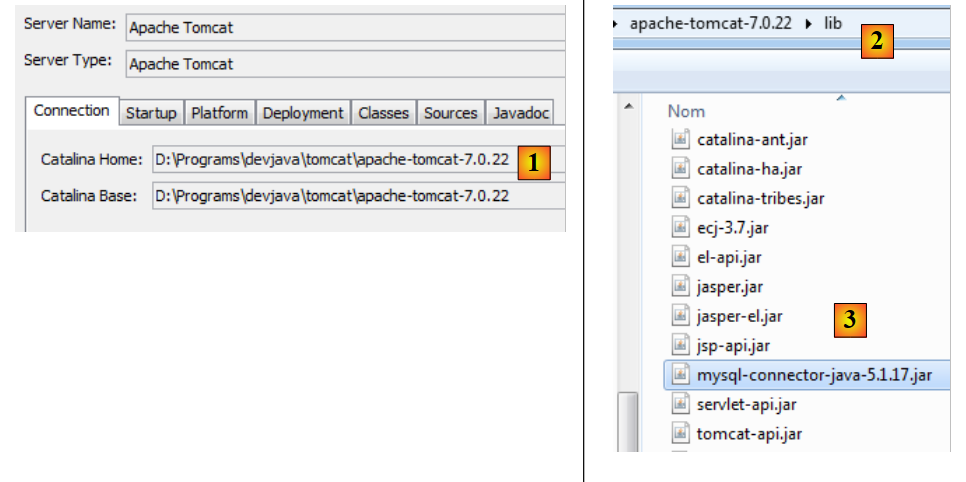 |
- Notieren Sie sich in [1] in den Tomcat-Eigenschaften das Installationsverzeichnis <tomcat>
- und legen Sie in <tomcat>/lib [2] einen aktuellen MySQL-JDBC-Treiber [3] ab.
Entfernen Sie anschließend die Abhängigkeit des Projekts vom MySQL-JDBC-Treiber [4].
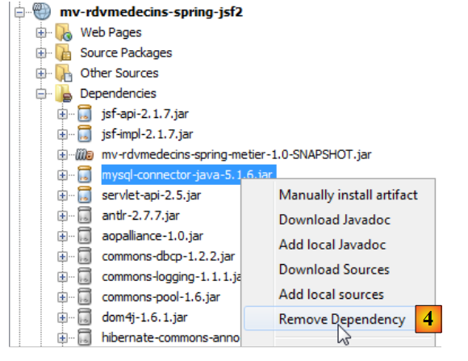 |
Sobald dies erledigt ist, testen Sie die Anwendung. Sie werden feststellen, dass Sie die Anwendung wiederholt laden und entladen können. Die Probleme mit dem Speicherleck sind jedoch nicht behoben; sie treten lediglich später auf.
4.4. Fazit
Wir haben die JSF/EJB/GlassFish-Anwendung in eine JSF/Spring/Tomcat-Umgebung migriert. Dies geschah in erster Linie durch Kopieren und Einfügen zwischen den beiden Projekten. Dies war möglich, da Spring und EJB3 viele Gemeinsamkeiten aufweisen. EJB3 wurde tatsächlich entwickelt, nachdem sich Spring als effizienter als EJB2 erwiesen hatte. EJB3 übernahm dann die besten Funktionen von Spring.
4.5. Tests mit Eclipse
 |
- Importieren Sie in [1] die drei Spring-Projekte,
- wählen Sie in [2] den JUnit-Test aus der [DAO]-Schicht aus und führen Sie ihn in [3] aus,
 |
 |
- in [4] ist der Test erfolgreich,
- in [5] gibt die Konsole eine Meldung aus.
 |
- Führen Sie in [6A] und [6B] den Konsolen-Client für die [Business]-Schicht aus,
- in [7] die resultierende Konsolenausgabe,
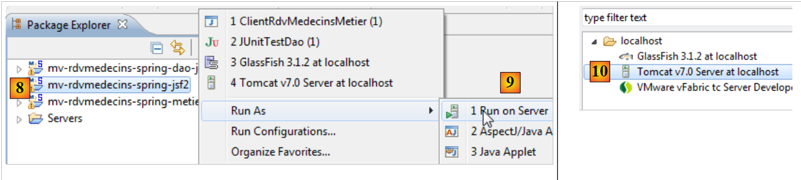 |
- In [8] [9] führen wir das Webprojekt auf einem Tomcat-7-Server [10] aus,
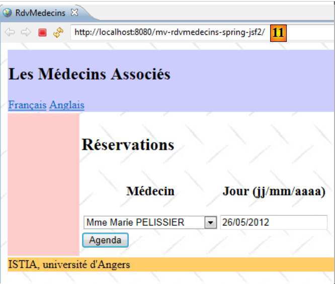 |
- in [11] wird die Startseite der Anwendung im internen Browser von Eclipse angezeigt.